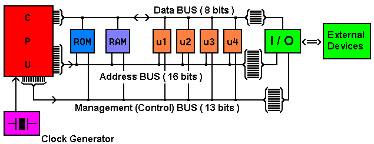
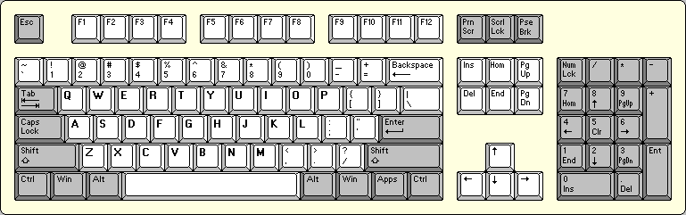
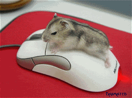
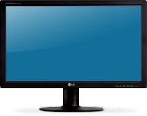

The Motherboard is the main Circuit Board found in microcomputers and other systems. It allows communication between many of the electronic components of a system. A motherboard usually contains significant sub-systems such as the central processor, input/output and memory controllers, interface connectors and other components integrated for general use. The motherboard is often referred to as the mother of all components as the name suggests. The CPU, memory and peripherals were housed on individual circuit boards which were plugged into the backplate.Laptop and notebook computers that were developed in the 1990s integrated the most common peripherals. This included motherboards with no upgradeable components, a trend that would continue as smaller systems that were introduced after the turn of the century. Modern motherboards include Sockets, a chipset, Non voltaile memory chips, A clock generator, Slots for expansion cards and Power Connectors. The sockets are where mictoprocessors are installed. The CPU is directly soldered to the motherboard. A chipset forms an interface between the CPU's front side bus, main memory and peripheral base. The Non Voltaire Memory Chips contain the systems firmware or BIOS. A clock generator produces the system clock signal to synchronize the various components. The Slots for expansion cards are the interface to the system via the buses supported by the chipset.

Two Widely used forms of modern RAMS are Static RAM(SRAM) and Dynamic RAM(DRAM). In SRAM, a bit of data is stored using the state of a six transistor memory cell. A bit is the smallest unit of data in a computer. A bit has a single binary value, either 0 or 1. A six transistor memory cell is a type of semiconductor memory that use bistable latching circuitry to store each bit. This form is more expensive, but is faster and requires less dynamic power than DRAM. DRAM stores a bit of data using a transistor and capacitor pair, which together comprise a DRAM memory cell. A capacitor is an electronic component used for storing charge and energy. The usual capacitor is a pair of parallel plates seperted by a small distance.


The hard drive is an incredibly efficient computer memory device that uses simple magnetism to store vast amounts of informations. In your laptop there's just a large shiny circular plate of magnetic material called a platter. In a hard drive you can find a read-write head, an Actuator that moves the read-write arm, a Central Spindle, a Magnetic Platter, Plug connections that link the hard drive to circuit board in personal computer, and a small spindle that allow read-write arm to swing across platter. A read-write head is a specific physical part of a hard disk that is responsible for reading data from, and writing dato to, the disk. They are usually made up of a thin horizontal magnetic blade attached to an actuator arm. A spindle is a shaft that holds a rotating hard disk drive platters in place. A platter is the circular disk on which magnetic data is stored in a hard disk drive.

A BUS is a comunication system that transfers data between components inside a computer or between computers. Early computer buses were parallel electric wires with multiple connections. Modern computer buses can use both parallel and bit serial connections, and can be wired in eithr an electric parallel or a daisy chain topology, or connected by switch hubs, as in the case of a USB. Daisy chain is a wiring scheme in which multiple devices are wired together in sequence or in a ring. parallel comunication is a method of conveying multiple binary digits simultaneously. Serial communication is the process of sending data one bit at a time, sequentially over a communication channel or computer bus.
A CPU is the electronic circuitry within a computer that carries out the instruction of a computer program by performing the basic arithmetic, logical, control and input/output operations specified by the instructions. The term CPU refers to a processor, more specifically to its processing unit and control unit. The form design and implementation of CPUs have changed over time, but their fundamental operations remain almost unchanged. Most modern CPUs are microprocessors, meaning they are contained on a single integrated circuit chip. Principal components of a CPU include the arithmetic logic unit(ALU) tht performs arithmetic and logic operations, processors registers that supply operands to the ALU and store the results of ALU operations, and a control unit that orchestrates the fetching and execution of instruction by directing the coordinated operations of the ALU, registers and other components.

A keyboard is a type-writer style device which uses an arrangement of buttons or keys to act as a mechanical lever or electronic switch.
A computer mouse is a pointing device that detects two dimnsional motion relative to a surface.
A computer monitor is an electronic visual display for computers. A monitor usually comprises the display device, circuitry, casing and power supply.
